Kibichuo, Okayama: things to do, food and stays
Kibichuo · Okayama
Kibichuo
Highlighted on the Okayama map.
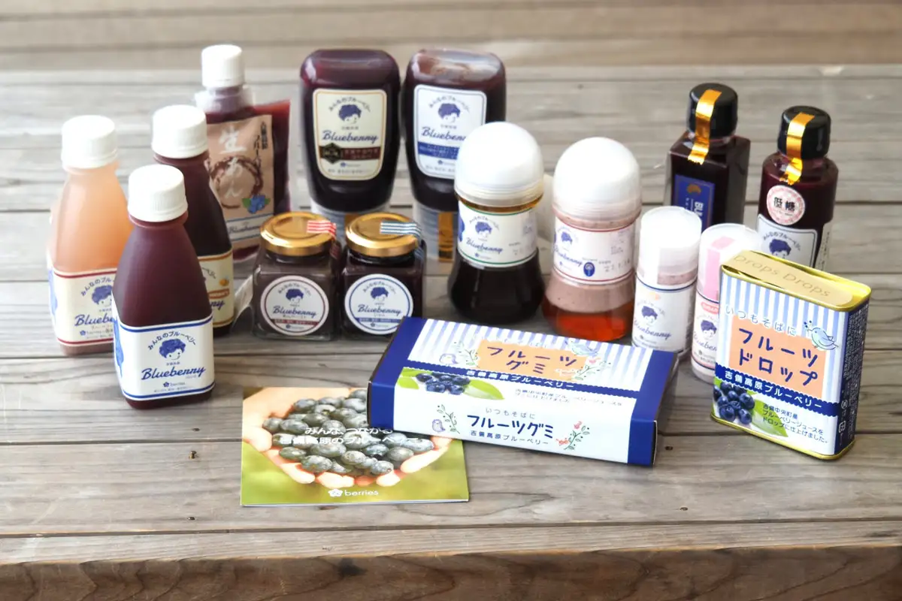
Stay
吉備高原リゾートホテル
Kibi Kogen Resort Hotel
Resort hotel in Yoshikawa, Kibichuo with a quiet countryside setting.
Dining
塩そばかみや
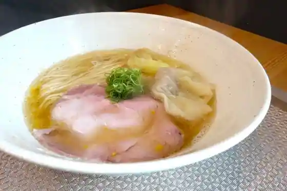
Shio Sobakamiya
アラビアータ マンマ
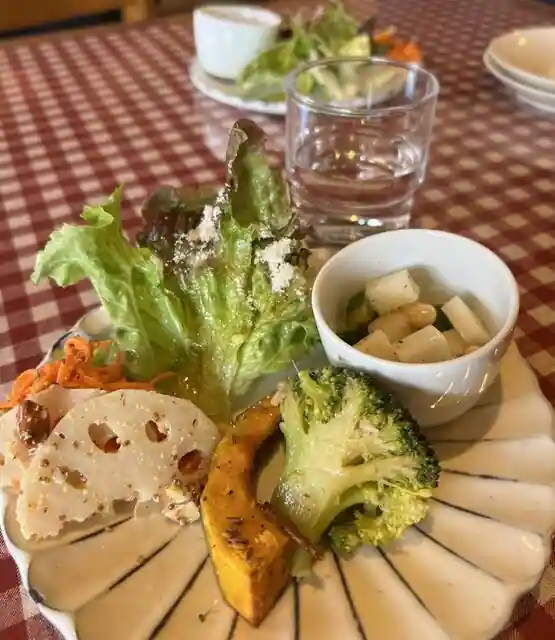
Arabiata Manma
焼き屋
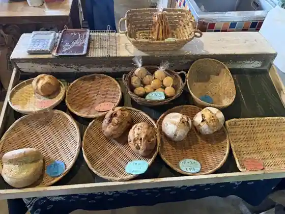
Yaki Ya
道の駅 かもがわ円城
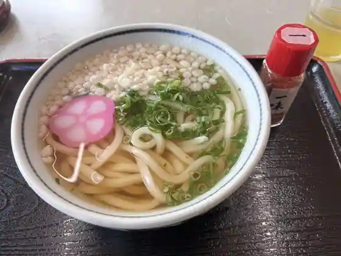
Michi No Eki Kamogawa Enjo
ベルネーゼ
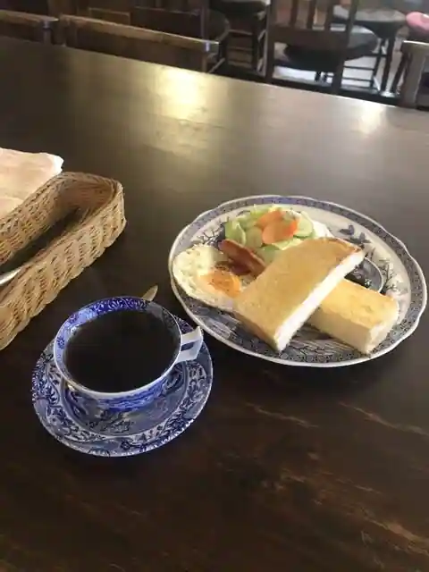
Beruneze
道の駅かよう
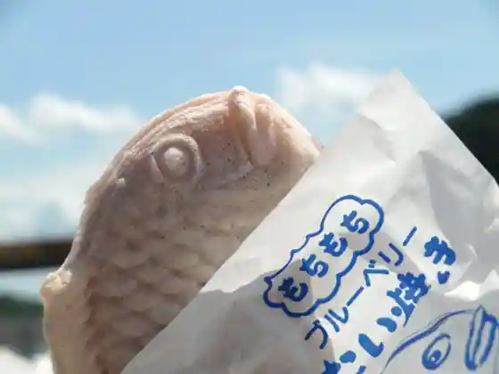
Michi No Eki Kayo
花空間 ivory
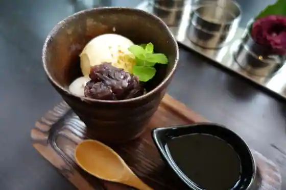
Hana Kukan ivory
オーガニカコーヒィ
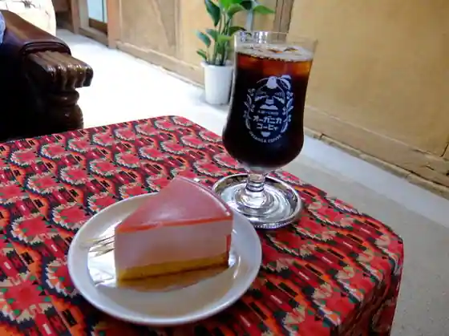
Oganikakohi
Cafe & Local Dining 麓
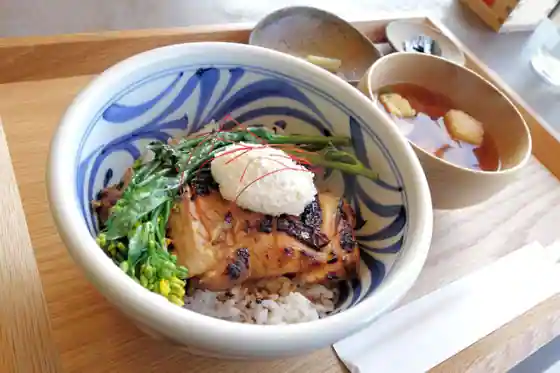
Cafe & Local Dining Fumoto
はれまに茶屋
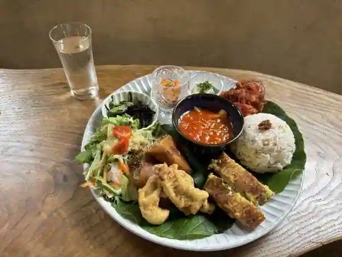
Haremani Chaya
吉備高原レストラン GOTTOH
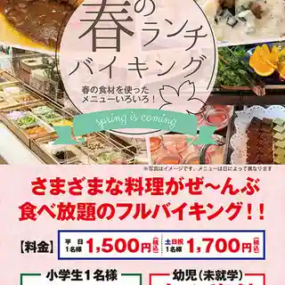
Kibi Kogen Restaurant GOTTOH
スパイスカフェ まからも
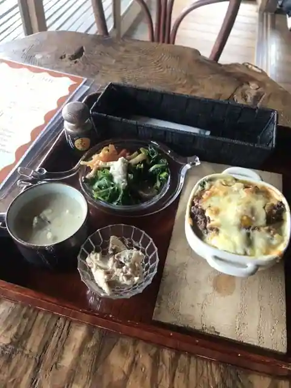
Supaisu Cafe Makaramo
和風レストランかよう
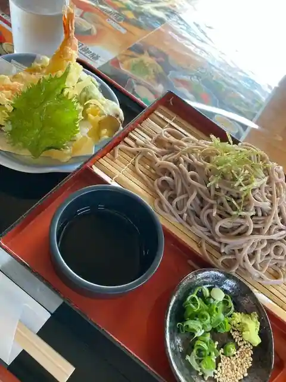
Wafu Restaurant Kayo
chika☆chika cake&cafe
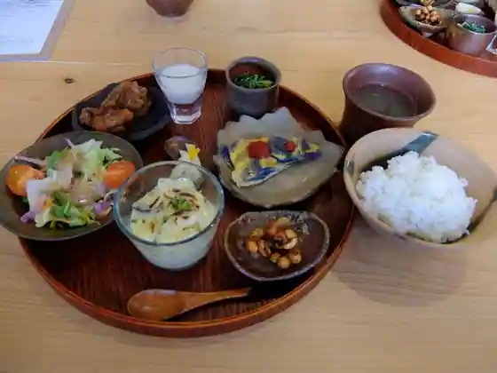
chika chika cake&cafe
吉備の国野菜村
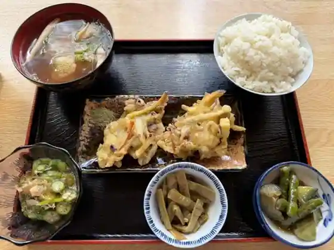
Kibi No Kuni Yasai Mura
茶房 かたやま邸
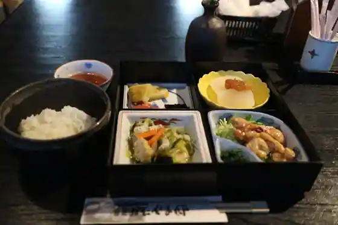
Sabo Katayama Tei
Cafe池ノ上
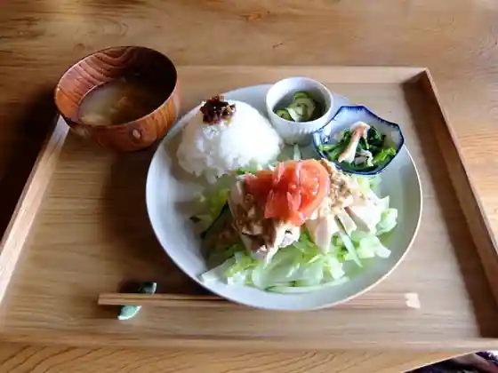
Cafe Ikenoue
新町食堂丸屋
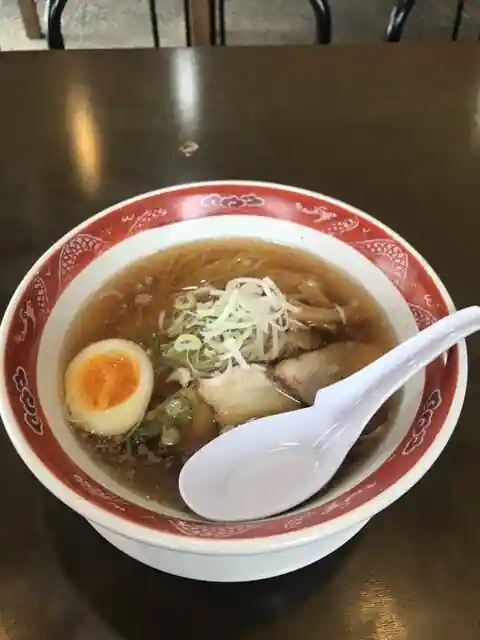
Shinmachi Shokudo Maruya
桂
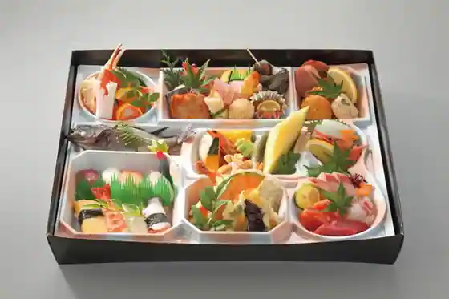
Katsura
小林豊稔堂
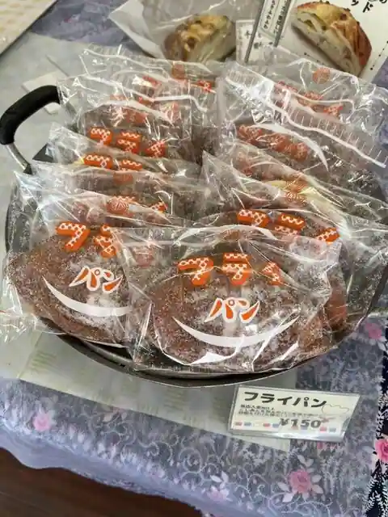
Kobayashi Honen Do
郷土料理 まきば
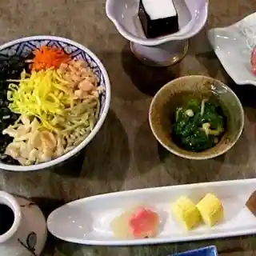
Kyodoryori Makiba
北京
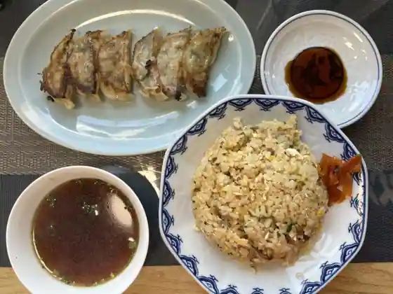
Pekin
Sights
Roadside Station Kayo
Roadside Station Kamogawa Enjo
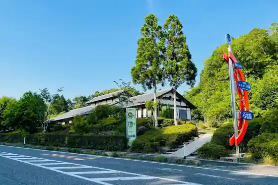
U Kan Kei
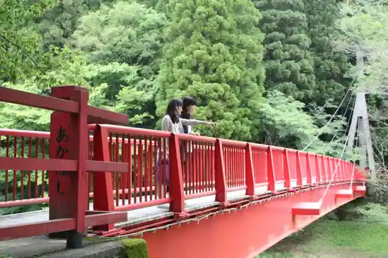
Yu no Se Onsen
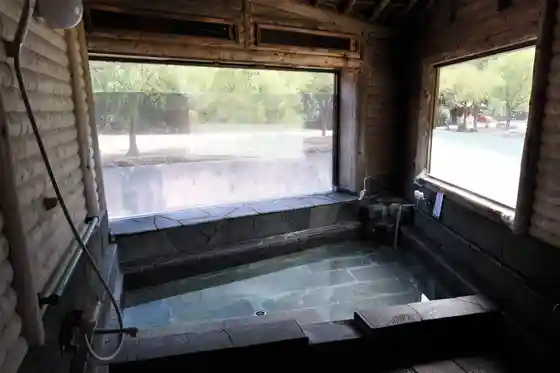
Yu no Se Onsen Sato Campground
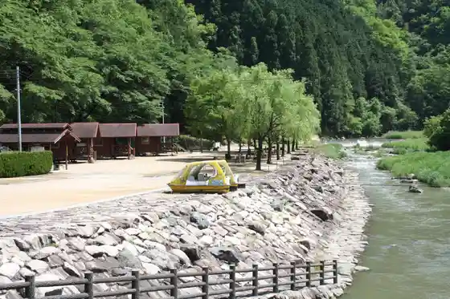
National Kibi Seishonen Nature no Ie
U Kan Kei Nature Park
Chirorin Village Kyanpugu Land
Narutaki Forest Park Campground
Enjoji (Enjoji)
Asutorokotejigarireo
Narutaki
Yume Farm Sei
Kibi Highlands N Sukuea
Kibichuo Park
JA Hare no Kunioka Yama Kayo Aozora City
Shigemori Mirei Memorial Museum
Sagi no Su Onsen
Kibi no Mori Botanical Garden
Enjo Furusato Mura
Narutaki Dam
Hyakusho Okoku Nishida Farm
Okazaki Kaheita Memorial Museum
Kawa Taira Dam
Kamo Soja Miya
Yoshikawa Hachiman Shrine
Myohon Tera
Taketani Dam
Kibichuo Yoshikawa Folk History Museum
Iwakura Park
Kibi Kogen Kantorii Club
Kobayashi Farm Ko Na Kokorozashi Ya
Kibichuo Kamogawa Folk History Museum
Kibichuo O Matsuri Hall